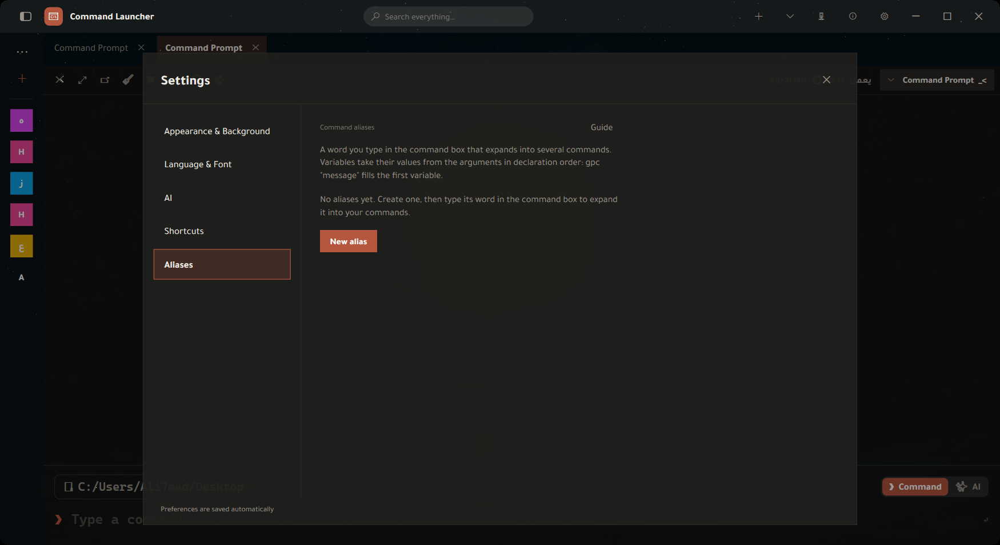
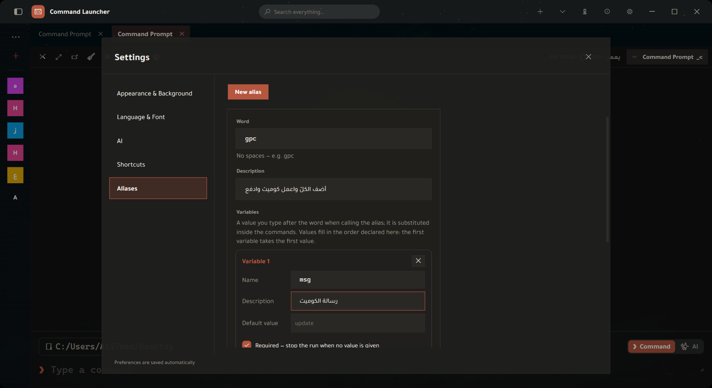
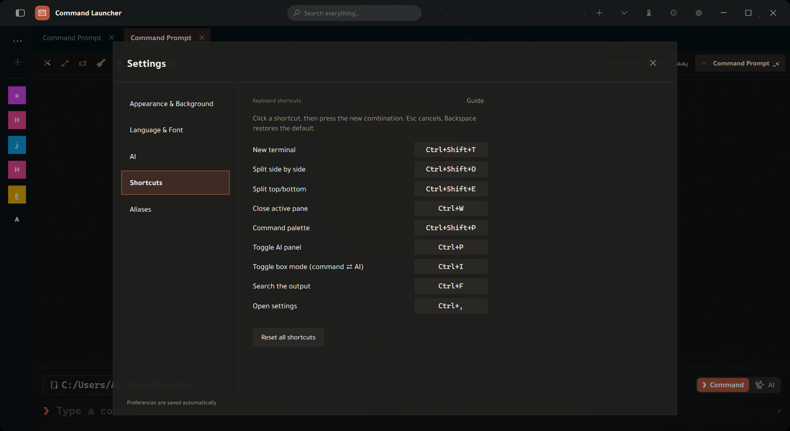

دليل مشغّل الأوامر
كلّ زرّ «الدليل» في التطبيق يفتح هذه الصفحة عند قسمه — ومن هناك تتصفّح الباقي من القائمة الجانبيّة.
١ · نظرة على النافذة

النافذة ثلاث مناطق:
- شريط العنوان — بحث سريع، وزرّ «+» لتيرمنال جديد، ومراقب الخوادم، والدليل (الأيقونة النابضة)، و«ما الجديد»، والإعدادات.
- الشريط الجانبيّ — الأوامر المحفوظة والمشاريع. يُطوى ويُفتَح من زرّ القائمة في أعلاه.
- منطقة التيرمنال — التبويبات وأجزاؤها، وتحتها صندوق الأوامر.
لا حاجة لحفظ شيء: كلّ ما تغيّره في الإعدادات يُحفَظ تلقائيّاً ويُطبَّق فوراً.
٢ · التيرمنال والتبويبات
تبويب جديد وانقسام
| Ctrl+Shift+T | تبويب جديد — يبدأ في مجلد التبويب النشط نفسه، يتبع آخر cd لا مجلد البدء. |
| Ctrl+Shift+D | انقسام عموديّ — جزءان جنباً إلى جنب في التبويب نفسه. |
| Ctrl+Shift+E | انقسام أفقيّ — جزءان فوق بعضهما. |
| Ctrl+W | إغلاق الجزء النشط (لا التبويب كلّه إن كان منقسماً). |
الانقسام يرث المجلد كذلك. وحين لا يكون هناك أيّ تيرمنال مفتوح — فلا مكان يُورَّث — يعرض «+» قائمة أماكن بدء: سطح المكتب، المستندات، التنزيلات، مجلد المستخدم، الأقراص الثابتة، و«استعراض مجلد…».
قائمة التبويب (زرّ الفأرة الأيمن على عنوانه)
| إعادة تسمية | اسم يصف ما تفعله فيه بدل مسار طويل. |
| تكرار التبويب | تبويب جديد بالمجلد والصدفة نفسيهما. |
| فصل إلى نافذة مستقلّة | يخرج التبويب إلى نافذته — للعمل على شاشتين. |
| فتح في المستكشف | يفتح مجلد العمل في مستكشف ويندوز. |
| نسخ العنوان · نسخ مجلّد العمل | إلى الحافظة. |
| نقل للأمام · نقل للخلف | ترتيب التبويبات. |
| إغلاق · إغلاق الأخرى · إغلاق ما بعده | تنظيف سريع لصفٍّ طويل من التبويبات. |
البحث في المخرجات
Ctrl+F يفتح شريط بحث داخل مخرجات التيرمنال النشط — للعثور على سطر في مخرَج طويل بلا تمرير.
اللصق
لصق نصّ متعدّد الأسطر يعرض تأكيداً يريك ما ستلصقه وعدد أسطره قبل أن يصل إلى الصدفة. وإن كان فيه ما يشبه أمراً خطراً، يُبرَز التحذير. سببه أنّ سطراً مخفيّاً في نصّ منسوخ من الويب يُنفَّذ فور لصقه بلا فرصة للمراجعة.
حجم الخطّ
Ctrl + عجلة الفأرة يكبّر خطّ التيرمنال ويصغّره. وصندوق الأوامر يتبعه (بمقدار أكبر بقليل ليبقى سطر الإدخال أوضح من المخرجات).
٣ · صندوق الأوامر
الصندوق أسفل التيرمنال ليس حقل نصّ عاديّاً — له وضعان ومساعدات كتابة.
الوضعان: أمر ⇄ ذكاء
المبدّل بجانب سطر الكتابة (أو Ctrl+I) يقرّر إلى أين يذهب ما تكتبه: إلى الصدفة كأمر، أو إلى المساعد كطلب بالعربيّة أو الإنجليزيّة. الوضع لكلّ تبويب على حدة — تبديله في تبويب لا يقلب سلوك البقيّة.
الاقتراحات أثناء الكتابة
يقترح الصندوق ما يناسب موضعك في السطر، ويميّز نوع كلّ اقتراح:
| أمر · أمر فرعيّ · خيار | git ثمّ commit ثمّ --amend. |
| مجلد · ملفّ | من مجلد العمل الحاليّ. |
| فرع | فروع git في المستودع الذي تقف فيه. |
| سكربت | سكربتات package.json وما شابه. |
| عمليّة | للأوامر التي تأخذ اسم عمليّة. |
| سجلّ | من أوامرك السابقة. |
وبجانب الصندوق: سجلّ الأوامر، ومتصفّح المجلدات لعمل cd بالنقر بدل كتابة المسار.
٤ · الأوامر المحفوظة والمشاريع
الأوامر المحفوظة
الشريط الجانبيّ يحتفظ بأوامرك المتكرّرة بأسمائها ووسومها. النقر يُدرج الأمر في الصندوق، والبحث في أعلى الشريط يصفّي القائمة أثناء الكتابة.
المشاريع
المشروع = مجلد + مجموعة أوامر سريعة + لون واسم. «فتح المشروع» يفتح تيرمنالاً في مجلده. وداخله خطوات جاهزة تشغّلها بالنقر — و«＋ أضف الأمر الحاليّ من التيرمنال» يلتقط آخر أمر كتبته ويضيفه للمشروع بلا إعادة كتابته.
قائمة الفأرة اليمنى على مشروع: فتح في تبويب جديد · نسخ الاسم · نسخ الباث · فتح في المستكشف · تكرار · إعادة تسمية · لون المشروع.
الأمر المكرَّر لا يُضاف مرّتين: يقول لك «الأمر موجود مسبقاً» بدل أن تتراكم نسخٌ منه في القائمة.
٥ · لوحة الأوامر والبحث
Ctrl+Shift+P تفتح لوحة الأوامر: تكتب فتُصفّى النتائج من كلّ ما يمكن فعله — أوامرك المحفوظة، ومشاريعك، وأفعال التطبيق. وفي أعلى اللوحة قسم «مقترَح» لما يناسب سياقك الحاليّ.
وفي شريط العنوان حقل بحث سريع يصل إلى الشيء نفسه بلا اختصار.
٦ · الأوامر المختصرة
الاسم المختصر كلمةٌ تكتبها في صندوق الأوامر فتتحوّل إلى سلسلة أوامر. بدل أن تكتب في كلّ مرّة ثلاثة أسطر متتابعة، تعرّفها مرّة واحدة تحت كلمة واحدة — ويمكن أن تأخذ الكلمةُ قيمةً تتغيّر في كلّ استدعاء.
gpc "أوّل كوميت"
→ git add .
→ git commit -m "أوّل كوميت"
→ git pushأين تُنشئها
الإعدادات (Ctrl+,) ← الأوامر المختصرة ← «اسم مستعار جديد».
حقول المحرّر

| الحقل | ما هو |
|---|---|
| الكلمة | ما تكتبه ليتوسّع. بلا مسافات. مثال: gpc. |
| الوصف | سطر يذكّرك بما يفعله بعد شهر. يظهر في القائمة تحت الكلمة. |
| المتغيّرات | القيم التي تُمرَّر عند الاستدعاء. مشروحة أدناه. |
| الأوامر | سطر لكلّ أمر، تُنفَّذ بالترتيب من أعلى إلى أسفل. |
| الصدفة المستهدفة | فارغ = كلّ الصدفات، أو pwsh/bash فلا يتوسّع إلّا فيها. مفيد لأنّ أمر bash في PowerShell خطأ صامت. |
| تأكيد قبل التنفيذ | يريك ما سيُنفَّذ وينتظر موافقتك. |
| مفعَّل | إطفاؤه يُبقي الاسم في القائمة بلا توسيع — بدل حذفه ثمّ إعادة كتابته. |
المتغيّرات — الحقول الثلاثة
كلّ متغيّر بطاقةٌ فيها ثلاثة حقول. القيم تُملأ بترتيب تعريف المتغيّرات.
| الحقل | ما تكتب فيه | لماذا |
|---|---|---|
| الاسم | حروف وأرقام وشرطة سفليّة — مثل msg |
هذا ما تكتبه داخل الأوامر مسبوقاً بـ$. تحت البطاقة سطرٌ يريك النتيجة حيّاً: «اكتبه في الأوامر هكذا: $msg». |
| الوصف | نصّ حرّ — «رسالة الكوميت» | يذكّرك بمعناه، ويظهر في رسالة الخطأ حين ينقص. لا يؤثّر في التنفيذ. |
| قيمة افتراضيّة | قيمة جاهزة — «تحديث» | تُستعمَل حين تستدعي الاسم بلا قيمة. اتركها فارغة إن لا افتراضيّ معقول. |
| إلزاميّ | خانة اختيار | إن كان إلزاميّاً ولا قيمة ولا افتراضيّ، يتوقّف التنفيذ برسالة تسمّي المتغيّر. |
لماذا الترتيب مهمّ: القيم تُطابَق بمواقعها لا بأسمائها. بمتغيّرين
branch ثمّ msg، يعطي gpc main "إصلاح" branch = main
وmsg = إصلاح.
صيغ الكتابة داخل الأوامر
$msg | قيمة المتغيّر المسمّى msg. |
${msg} | الشيء نفسه، والأقواس تفصل الاسم عمّا يليه: ${msg}_v2. |
$1 … $9 | القيمة بموضعها مهما كان اسم المتغيّر — أو بلا متغيّرات معرَّفة أصلاً. |
$@ | كلّ ما كتبته بعد الكلمة، مفصولاً بمسافات. |
ما لا يُستبدَل — عمداً: لا يُستبدَل إلّا متغيّرٌ عرّفتَه أنت.
كلّ $ أخرى تصل إلى الصدفة كما هي: $env:PATH و$PWD
و$(git rev-parse HEAD) تبقى سليمة. استبدالها بالفراغ كان سيُفسد الأمر بصمت.
الاقتباس
gpc "إصلاح خطأ في الدخول" → msg = إصلاح خطأ في الدخول
gpc إصلاح خطأ → msg = إصلاح ($2 = خطأ)أمثلة جاهزة
nb — فرع جديد وادفعه (متغيّر name إلزاميّ):
git checkout -b $name
git push -u origin $namedcu — أعد بناء حاويات المشروع (بلا متغيّرات):
docker compose down
docker compose build
docker compose up -dserve — خادم محلّيّ على منفذ (port افتراضيّه 8000):
python -m http.server $port٧ · اختصارات لوحة المفاتيح

| الاختصار | الفعل |
|---|---|
| Ctrl+Shift+T | تبويب تيرمنال جديد |
| Ctrl+Shift+D | انقسام عموديّ |
| Ctrl+Shift+E | انقسام أفقيّ |
| Ctrl+W | إغلاق الجزء النشط |
| Ctrl+Shift+P | لوحة الأوامر |
| Ctrl+P | إظهار/إخفاء لوحة الذكاء |
| Ctrl+I | تبديل وضع الصندوق: أمر ⇄ ذكاء |
| Ctrl+F | البحث في مخرجات التيرمنال |
| Ctrl+, | فتح الإعدادات |
كيف تغيّر اختصاراً
- انقر الاختصار المكتوب أمام الفعل — يتحوّل إلى «اضغط التركيبة…».
- اضغط التركيبة التي تريدها. تُسجَّل فوراً.
- Esc يلغي الالتقاط ويبقي القديم. Backspace يعيد الافتراضيّ.
التعارض يُرفَض بصراحة: إن كانت التركيبة مأخوذة لفعل آخر، تُرفَض برسالة تسمّي الفعل الذي يملكها — فلا يقتل اختصارٌ جديد اختصاراً قديماً بصمت.
زرّ «إعادة الافتراضيّ» أسفل الصفحة يعيد كلّ الاختصارات دفعةً واحدة.
التركيبة تُخزَّن نصّاً مفصولاً بـ+، فلا يمكن إسناد المفتاح + نفسه — «Ctrl++» يصير غير قابل للقراءة.
٨ · مساعد الذكاء الاصطناعيّ
للمساعد مدخلان: لوحة جانبيّة (Ctrl+P) للحوار الطويل، ووضع الذكاء داخل صندوق الأوامر (Ctrl+I) حين تريد أمراً واحداً ينفَّذ فوراً بلا مغادرة التيرمنال.
الاتّصال
| المزوّد | OpenAI · OpenRouter · Kimi · Z.ai · مزوّد مخصّص بعنوانه. |
| المفتاح | يُحفَظ معمّى بمفاتيح ويندوز (DPAPI) على حسابك — لا يُرسَل إلّا إلى المزوّد الذي اخترته. |
| النموذج | القائمة قابلة للكتابة: اكتب أيّ جزء من الاسم فتُفلتَر. وتغييره من ترويسة اللوحة يخصّ المحادثة الجارية وحدها. |
سلوك المساعد
| درجة الإبداع | أقلّ = إجابات أثبت وأقرب للحرفيّة. للأوامر: الأقلّ أفضل. |
| سقف طول الردّ | «تلقائيّ» يترك الأمر للنموذج. ارفعه إن كانت الردود تُقطَع. |
| سقف مقتطف السياق | كم من مخرجات الشاشة يُسمَح بإرفاقه. أقلّ = خصوصيّة أعلى وتكلفة أقلّ. |
| تعليمات مخصّصة | تُضاف إلى كلّ محادثة: «استعمل PowerShell دائماً»، «اشرح باختصار». |
| تنفيذ تلقائيّ | حين يردّ بأمر واحد، يُنفَّذ مباشرةً في التيرمنال. |
| عرض اللوحة · حجم خطّ الدردشة | منزلقان يسريان على المحادثة المفتوحة فوراً. |
سياج التنفيذ التلقائيّ: الأوامر الخطرة (rm -rf، git reset --hard،
curl | sh، mkfs…) والكتل متعدّدة الأسطر لا تُنفَّذ أبداً بلا تأكيدك،
مهما كان هذا الإعداد. وزرّ «أرسل ونفّذ» على كتل الكود يمرّ على الفحص نفسه — لا باب خلفيّ.
ما يُرسَل مع سؤالك
مع كلّ طلب من صندوق الأوامر يُرفَق: مجلد العمل، واسم الصدفة، وآخر ثمانية أوامر، وآخر أمر فاشل (أمره ورمز خروجه وأوّل سطر خطئه). مخرجات الشاشة نفسها لا تُرسَل ما لم تُفعّل «إرسال سياق التبويب». وحين يقتضي الأمر إرسال مقتطف فيه ما يشبه سرّاً، تُعرَض معاينةٌ تقول كم عنصراً حُجِب، ولا يمضي شيء قبل موافقتك.
اللوحة
| السجلّ | محادثاتك المحفوظة بتواريخها؛ تفتح أيّها فترى السؤال وردّه كاملَين. |
| كتل الكود | «أرسل ونفّذ» يضعه في التيرمنال ويشغّله، و«أرسل فقط» يضعه في الصندوق لتراجعه أوّلاً. |
| مؤشّر البحث | يظهر منذ الإرسال حتّى أوّل حرف من الردّ. |
إن لم يفهم سؤالك
لا يخمّن. يردّ بسؤال توضيحيّ واحد بلا أمر، ويبقى الصندوق في وضع الذكاء مع سهم يدلّك على مكان الجواب. تكتب الجواب فتُكمَل المحادثة في مكانها مربوطةً بسؤالها.
٩ · ذاكرة التطبيق
نافذة تعرض كلّ ما تعلّمه التطبيق عن استعمالك — محفوظ على جهازك وحده، ويمكنك محوه كلّه بزرّ واحد.
| أوامرك المتكرّرة | قوالب أوامرك وعدد مرّات تشغيلها ونسبة نجاحها. يمكنك تثبيت قالب ليُقترَح أكثر، أو حظره ليختفي. |
| الأخطاء وحلولها | الأخطاء التي واجهتك والحلّ المحفوظ لكلٍّ منها وكم مرّة تكرّر. |
| سجلّ الاقتراحات | ما اقترحه التطبيق وقرارك فيه: قُبِل · رُفِض · معلّق. |
| ملفّك التعريفيّ | خلاصة عادات عملك التي تُرفَق مع طلبات المساعد. يحتاج بضعة أوامر متكرّرة قبل أن يتكوّن. |
| المحادثات | محادثات الذكاء المحفوظة. وإن كان الحفظ معطَّلاً يقول التبويب ذلك صراحةً ويدلّك على مفتاحه. |
«امسح كلّ شيء» يحذف القوالب وعدّاداتها والأخطاء وحلولها وسجلّ الاقتراحات. لا تراجع.
١٠ · المظهر والخلفيّة
الثيم
اختر ثيماً فيُطبَّق فوراً بلا إعادة تشغيل. المعروض أوّلاً مجموعةٌ مختارة، و«عرض كلّ الثيمات» يفتح البقيّة. ولكلّ ثيم وضعٌ فاتح وداكن، مع خيار «مزامنة الفاتح/الداكن مع النظام» فيتبع وضع ويندوز.
لون التمييز واستدارة الحواف
لون التمييز يمسّ الأزرار والمؤشّرات والروابط في كلّ الواجهة. واستدارة الحواف تضبط حدّة الزوايا في البطاقات والحقول.
الخلفيّة
| خلفيّة الثيم | الافتراضيّ — يتبع الثيم المختار. |
| قوالب | خلفيّات جاهزة بتدرّجات وأعماق. |
| ألوان مصمتة · تدرّجات · نقوش | مجموعات مصنَّفة تختار منها. |
| صورة مخصّصة | صورتك أنت خلفيّةً، مع «إزالة» للعودة. |
| شفافيّة التيرمنال | كم تظهر الخلفيّة من خلف نصّ التيرمنال. |
وفي الإعدادات كذلك: لون كتابة التيرمنال وحجم خطّ التيرمنال.
١١ · اللغة والخطوط
اللغة
عربيّة أو إنجليزيّة، وتُطبَّق فوراً — بما في ذلك اتّجاه الواجهة (يمين↔يسار). والأرقام تبقى لاتينيّة في الحالتين. وهذا الدليل يتبع لغتك: زرّ «الدليل» يفتح النسخة الموافقة.
الخطوط
| خطّ الطرفيّة | خطّ نصّ التيرمنال — يُختار من الخطوط المثبَّتة على جهازك، كلّ اسم معروض بخطّه نفسه. |
| خطّ الواجهة | خطّ باقي التطبيق. إفراغ الحقل يعيد الافتراضيّ. |
| الخطّ أحاديّ العرض | للمسارات والنصوص التقنيّة داخل الواجهة. |
الأحجام حسب الدور
كلّ نصّ في التطبيق ينتمي إلى دور، ولكلّ دور حجمه. هذا ما يجعل تكبير الخطّ يكبّر كلّ شيء بدل أن يكبّر نصّاً ويترك جاره.
| نصّ الواجهة | الأساس. بقيّة الأدوار تُشتقّ منه ما لم تفكّ الاشتقاق. |
| القوائم | المنسدلات وقوائم الفأرة اليمنى. |
| الجداول | صفوف القوائم الطويلة والجداول. |
| العناوين | عناوين النوافذ والأقسام الكبرى. |
| عناوين فرعيّة | العناوين الصغيرة داخل الأقسام. |
| النصّ الثانويّ | التلميحات والوصف تحت الحقول. |
| النصّ الدقيق | الشارات والعدّادات. |
| النصّ التقنيّ | المسارات وكتل الكود داخل الواجهة. |
| النصّ الكبير | أرقام وأيقونات حالات الفراغ. |
| الطرفيّة | نصّ التيرمنال (Ctrl + العجلة يغيّره أيضاً). |
| دردشة الذكاء | نصّ المحادثة في اللوحة الجانبيّة. |
منزلق واحد يكفي عادةً: ما دام مفتاح «اشتقّها من حجم نصّ الواجهة» مرفوعاً، فتحريك «حجم نصّ الواجهة» وحده يكبّر التطبيق متناسقاً. أطفئه إن أردت ضبط كلّ دور بيدك.
محرّر الإعدادات (JSON)
للضبط الدقيق: «محرّر الإعدادات» يفتح ملفّ config.json داخل التطبيق مع
تنسيق وتحقّق وحفظ وتطبيق. الخطأ يُعرَض بسطره وعموده،
ولا يُسمَح بالحفظ وفيه خطأ صياغة. بعض إعدادات النظام (الثيم/اللغة/الخلفيّة) تحتاج
إعادة تشغيل، والمحرّر يقول ذلك عند الحفظ.
١٢ · مراقب الخوادم
أداة داخل التطبيق تتّصل بخوادمك عبر SSH لتعرض حالتها وملفّاتها وحاوياتها.
الخوادم
أضِف خادماً، ثمّ «اختبار الاتّصال» قبل الاعتماد عليه. القائمة تعرض آخر اتّصال لكلّ خادم، ومنها: اتّصال · قطع · إعادة اتّصال · تعديل · نسخ · حذف.
التبويبات
| لوحة القيادة | نظرة عامّة: المضيف والنظام والنواة والمعالج وعدد الأنوية والعنوان ومدّة التشغيل والحِمل والذاكرة والقرص /، مع أعلى العمليّات. |
| الأقراص | الأقراص والمساحة المستهلكة. |
| المجلّدات | استهلاك المجلّدات في Treemap بصريّ، وشجرة، وأكبر الملفّات — لمعرفة ما ملأ القرص. |
| الملفّات | تصفّح ملفّات الخادم: فتح · تعديل · تنزيل · إعادة تسمية · حذف · رفع · مجلّد جديد · «الكونسول هنا». |
| الحاويات | حاويات Docker: بحث، وتسمية تختارها أنت للحاوية، و«فتح» يدخل مستكشف الحاوية لتصفّح ملفّاتها كأنّها جهاز. |
| الإدارة | أفعال إداريّة على الخادم. |
الحذف على الخادم نهائيّ — لا سلّة محذوفات في SSH. لذلك يسأل قبل حذف أيّ ملفّ أو مجلّد.
١٣ · ما الجديد والتحديث
زرّ «ما الجديد» في شريط العنوان يعرض تاريخ الإصدارات كاملاً بمميّزات كلّ نسخة. ويظهر تلقائيّاً مرّة واحدة بعد كلّ تحديث.
وحين يتوفّر تحديث تظهر نقطة بلون التمييز على الزرّ نفسه، والنقر حينها يفتح حوار التحديث بدل لوحة «ما الجديد» — لأنّه ما تنتظره في تلك اللحظة.